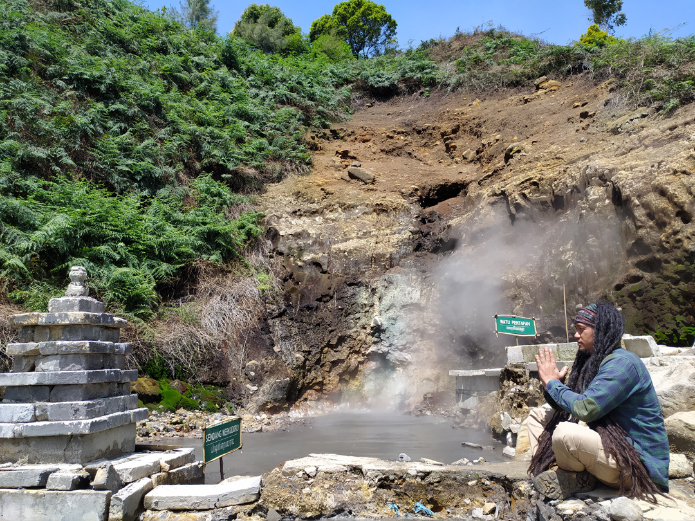

Kawah Candradimuka
Lokasi
Kawah Candradimuka merupakan kawah aktif di Kawasan Wisata Dataran Tinggi Dieng. Meskipun kurang populer, namun Kawah Candradimuka tetap menjadi destinasi wisata yang menarik untuk dikunjungi. Seperti halnya kebanyakan objek wisata di Dieng, nama Kawah Candradimuka juga diambil dari cerita pewayangan, yang merupakan tempat dimana jabang bayi Gathotkaca digembleng dan mendapatkan kesaktian. Kawah ini berada di Desa Pekasiran, Kecamatan Batur, Kabupaten Banjarnegara
Fasilitas
Di obyek wisata kawah Candradimuka terdapat 3 kepundan menurut para ahli geologi, kawah - kawah ini bukan merupakan kawah gunung berapi, tetapi merupakan rekahan tanah yang secara aktif menghasilkan solfatara, tempat yang memiliki suhu panas yang luar biasa seperti Candradimuka yang diceritakan dalam cerita pewayangan, dinamakan Kawah Candradimuka karena suhu air yang ada di kawah ini bisa mencapai 100 derajat Celsius
Transportasi
Bagi anda yang berasal kota Banjarnegara sudah tidak bingung lagi untuk mendatangi lokasi wisata Kawah Candradimuka Banjarnegara Jawa Tengah. Tentunya sarana transportasi apa yang anda pakai untuk berwisata ke Kawah Candradimuka Banjarnegara Jawa Tengah dengan memakai kendaraan pribadi seperti : Mobil atau motor pribadi. Anda bisa meminta panduan arah ke wisata Kawah Candradimuka Banjarnegara Jawa Tengah di google maps yang terpasang di smartphone anda. Karena memakai kendaraan pribadi akan lebih menyenangkan dari pada memakai kendaraan umum. Akan tetapi jika anda memakai kendaraan umum seperti : bis umum atau angkutan lainnya juga bukan masalah besar, pasalnya anda bisa berhenti di kecamatan Batur Setelah itu melanjutkan dengan menggunakan ojek ataupun kendaraan pribadi anda menuju Desa Pekasiran lalu berjalan kaki hingga sampai di lokasi Wisata Kawah Candradimuka tersebut.